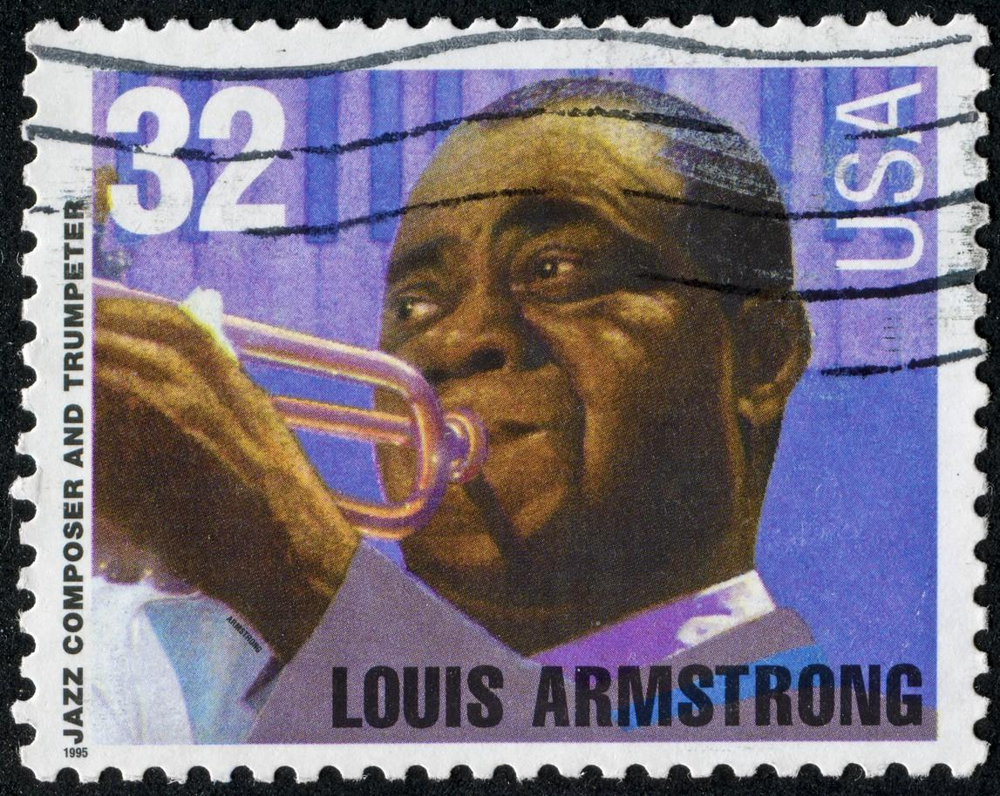

Can the US Become a Truly Egalitarian Society?
15 Jun 2020 · 12 min read
topics: cultural evolutionequalitysociety

As with many of us, I've been thinking deeply lately about the murders of George Floyd, Ahmaud Arbery, Breanna Taylor, and so many other people of color, and wondering how and why these atrocities continue to occur in my country, and what we can do to turn things around.
Naming the Societal Models
I've concluded that there are basically two types of human societies, with very different ways of thinking about themselves.
Let's call the first type of society the egalitarian model. In this model – as with all human societies – there are various schemes for specialization and the productive division of labor, but all of the different roles that people play are perceived to have roughly equal value. Everyone contributes to society, and everyone is valued. Sure some people may make a little more than others, but all members of society have enough income to live happy, fulfilling lives.
Let's call the second type of society the hierarchical model. In this model, people are placed on a value hierarchy based on their roles in society, with some at the top being regarded as highly valuable, while those below are accorded decreasing assessments of value, until those towards the bottom are considered to have little or no value to society.
In other words, we can have one type of society in which every human being is viewed as worthy and valuable, or we can have a very different sort of society in which most people are viewed as nearly worthless, with a few towards the top of the heap considered to have supreme value.
In terms of politics and economics, it's easy to associate the hierarchical model with the old schemes of royalty, and to equate the egalitarian model with the democracies that followed. In other words, “Let them eat cake” vs. “Liberté, égalité, fraternité.”
If only it were that simple.
Exterior and Interior Aspects of the Models
Let us first consider the exterior aspects of the two models. The egalitarian model depends on perhaps three different factors.
- There must be sufficient wealth to support middle class lifestyles for the large majority of its members.
- There must be sufficient work to keep the large majority of its members employed.
- There must be sufficient industrialization and mechanization to avoid the need for brutal manual labor for the large majority of its members.
If any of these three factors are missing, then it will be hard to sustain an egalitarian society – no matter how noble our intentions – and social structures are liable to revert to the hierarchical model.
Now let's look at the interior aspects of the two models. How do people within these two types of societies think and feel?
If we're looking for an example of the egalitarian spirit, then it's hard to do better than the story of Louis Armstrong's home in New York City. The king of jazz and his fourth and final wife decided to live in a humble neighborhood in Queens, and Armstrong liked to refer to himself as “a salary man” who preferred to live on the same block as telephone operators, schoolteachers and janitors. In fact, when Mrs. Armstrong decided to give their house a brick façade, Louis went door-to-door down the block offering to pay for similar upgrades for any of his neighbors who wanted one.
On the other hand, if we're looking for an example of the hierarchical spirit, we need look no farther than Mar-a-Lago and the various Trump hotels, with their gold-plated bathroom fixtures.
If we probe a bit deeper into these two mindsets, then we find that believers in an egalitarian society genuinely feel that others in their society – no matter the details of their origins, or their stations in life – share an equal worth with their own. Everyone is valued. No one is looked down upon. We're all different, but no one is superior or inferior because of our differences. Diversity is naturally valued because of the understanding that society wouldn't work without everyone doing what they do best. And it's assumed that everyone wants to contribute to society by finding what they're good at and then working at their chosen roles. We need everyone, and we're all in this together.
But then if we peer into the mind of a believer in hierarchy, we find a very different perspective. They believe that a great number of people are naturally lazy and shiftless. For those towards the top of the value pyramid, they believe that it is only natural for the cream to rise to the top. At the same time, they believe that those towards the bottom of the hierarchy must be kept hungry and frightened in order to get them to do any useful work at all. The hierarchical viewpoint is that different sorts of people fit naturally into different positions in the hierarchy, and that, in order to maintain social order, they must be kept in their respective positions.
(Note that I'm intentionally avoiding use of the terms socialism and capitalism here, because I think it's dangerously miseleading to equate egalitarian thinking with socialism, and to equate hierarchical thinking with capitalism. Louis Armstrong was not associated with Karl Marx. And Donald Trump has never read a word of Adam Smith. One can be an egalitarian and yet still believe in a free market economy. Unfortunately, many fat cat capitalists and swollen-headed students of Ayn Rand have given capitalism a bad name. But for our purposes today, let's set these two inflammatory terms aside, and continue our discussion without them.)
And so we can see that, for each of these two societal models, there are certain accompanying exterior factors: things we can readily observe and measure – as well as certain accompanying interior factors: ways in which people think and feel.
Application to the United States
When we look at some of the founding documents for our country, we find nothing but the most egalitarian sentiments being expressed.
Here, for example, are some of the opening words of the Declaration of Independence, published in 1776.
We hold these truths to be self-evident, that all men are created equal, that they are endowed by their Creator with certain unalienable Rights, that among these are Life, Liberty and the pursuit of Happiness.-That to secure these rights, Governments are instituted among Men, deriving their just powers from the consent of the governed….
Now of course the obvious, explicit, problem with these words, viewed in hindsight, is that these egalitarian sentiments were reserved for men: no mention of women.
Additionally, the less obvious, implicit problem with these words is that the qualifier of European was assumed: when these words were written, native Americans and African Americans were assumed to be racially inferior, and not deserving of inclusion in these otherwise noble sentiments.
And so the hierarchical seeds were planted in our egalitarian new world from the very beginning. Native Americans were valued only for the lands that they occupied, and African Americans were valued only for the back-breaking labor they could furnish. And so the apparent success of our American society was built on top of these two supporting pillars – supplying the pretense of egalitarianism, without the whole substance.
Much of the rest of our American history, up to and including the present day, can be seen as the often unsuccessful attempts to reconcile these two contradictory impulses.
And the might of armed police in the US has often been used – not to “keep the peace” – but to keep people of color and the lowest paid workers in their assigned slots in the hierarchy. Even in an egalitarian society, peacekeepers may be needed from time to time. But only in a strongly hierarchical society are so many police, with so many weapons, needed so often, to kill and imprison so many people.
Application to our Current Situation
In some ways the old systems of hereditary nobility were much kinder, and much less insidious, than our current reality. With the old systems at least everyone knew where they stood, and the hierarchies were out in the open for everyone to see.
Our problems today, I'm convinced, are made worse by the fact that those believing in hierarchy do not speak of it openly, and so those believing in egalitarianism cannot confront it head-on. Instead we use an elaborate system of coded phrasing to avoid saying what we really mean.
Take our current situation here in Seattle as an example. To be clear, I live in Seattle, in the city. If I were to livestream the events outside my house, you would see kids and parents and neighbors, with everyone practicing respectful social distancing, and people wearing masks as needed. If you were to see the view from my window as I drive around my neighborhood, you would see small and occasional groups of demonstrators standing on the sidewalk and carrying “Black Lives Matter” signs, and smiling whenever a passing driver honks in support.
And yet, my wife and I have had a few people call in the last few days to make sure we're ok. Because they keep hearing reports – on Fox News, no doubt – that our city is being demolished by rioters, anarchists, terrorists, and members of the shadowy Antifa organization.
Nothing could be further from the truth. What is true is that large numbers of people have been peacefully protesting in downtown Seattle for over a week. And in one part of town, where a heavily militarized police presence was standing in continual confrontation with protestors, the police have temporarily withdrawn, in order to distance the powder keg from the matches, so to speak.
And what happened without the police? No looting, no destruction. Instead we had peaceful protestors forming what they call the Capitol Hill Autonomous Zone (CHAZ). You could very accurately call this group egalitarian. But to use the sort of labeling coming from our president, and the right-wing news media, you would have to be a closet believer in hierarchy, and so would have a strong need for the police to exert their military might in order to force people back into what you perceive to be their rightful places in the social order.
Why All of This Matters to Black Lives
When I see a police officer kneeling on the neck of a black man, and with conscious cruelty killing him in front of a crowd of black people, all while being recorded on video, I quite clearly see the intended message: “you people are of little value to our society, and you need to be reminded of that fact.” When I see a group of white men hunting down and killing a black man out for a jog, as if he were some sort of animal, I see a similar message. When I see our president casually having a crowd of peaceful protestors dispersed by spraying them with pepper spray, I quite clearly see the intended message: “black people and those who demonstrate for racial justice are of little value to our society, while I as president and successful capitalist am of immense value.”
The problem here is that, until we have a truly egalitarian society, we will always have an underclass, and it will always be made up of people of color, and force will always be used to keep the underclass in its place.
And It's Not Just Republicans
Our current Republican politicians and many of their supporters are clearly believers in a hierarchical society.
But they're not the only ones.
When you hear a Democratic candidate for president speak of a large segment of our society as a “basket of deplorables,” that's a pretty clear signal that they believe we live in a hierarchical society, and a pretty clear indication of who they believe belongs at the bottom of that hierarchy.
And when you see a group of our political leaders supporting globalization, and standing by while good-paying jobs are shipped overseas, with no apparent concern for what will become of the Americans who were previously earning decent middle-class wages working at those jobs, that's a pretty clear indication that they believe we live in a hierarchical society, and a pretty clear indication of who they believe to be of little value.
The Bottom Line
But again, that's the problem with a modern social hierarchy which is never openly discussed: the people towards the top can live in blissful ignorance of what's really going on, while those lower down continue their daily struggle to avoid being forced to the very bottom.
And this is why many Americans today have grown tired of so-called progressive leaders who are not truly working for an egalitarian society. And so a large number would rather have someone who openly calls for true equality – health care for all, decent wages for all, decent educations for all, food for all, shelter for all – or someone who is willing to openly admit that we have a hierarchy, and then is willing to clearly signal who belongs at the bottom.
Pretty much anyone who's been paying any attention at all understands at some level that the sort of hybrid mix of societal types that we've been playing at is no longer viable.
And so it's time for our country to choose: do we want a fascist hierarchy, or do we want equal opportunity for all?
There's really no middle ground.